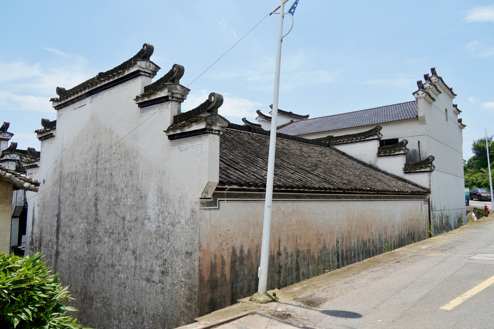

省保宗祠建筑
西北村角，旧祠犹存雍睦堂
雍睦堂是新叶村的省级文物保护单位，也是叶氏宗祠体系的一部分。与规模完整的总祠相比，它保存的是一座支祠经历变迁后的具体面貌。
01
三进只余一进的老祠
雍睦堂原本是一座三进的祠堂，历经岁月，如今只剩下最后一进保存下来。即便如此，它临街的厅堂门面依旧完整，粗大的木构与卷棚廊檐，仍能让人想见它当年规整的格局。
02
村西北的公共建筑片区

雍睦堂所在的村西北一带，曾是新叶村重要公共建筑较为集中的片区。沿街可见层叠马头墙与连续高墙，祠堂和周边老屋共同形成村角清晰而紧凑的轮廓。